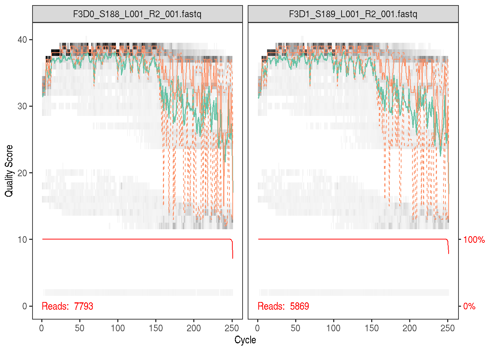
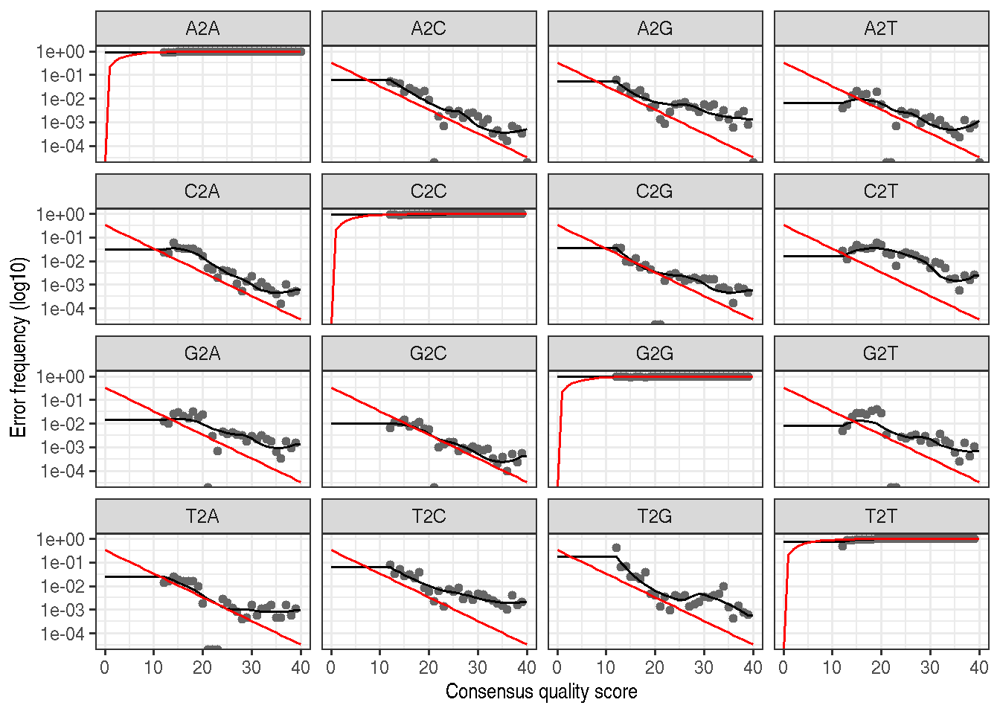

DADA2 Pipeline Tutorial (1.2)
Here we walk through version 1.2 of the DADA2 pipeline on a small multi-sample dataset. Our starting point is a set of Illumina-sequenced paired-end fastq files that have been split (or “demultiplexed”) by sample and from which the barcodes/adapters have already been removed. The end product is a sequence table, a higher-resolution analogue of the ubiquitous “OTU table”, which records the number of times each ribosomal sequence variant (SV) was observed in each sample. We also assign taxonomies to the output sequences, and demonstrate how the data can be importeted into the popular phyloseq R package for the analysis of microbiome data.
Starting point
This workflow assumes that the data you are starting with meets certain criteria:
- Non-biological nucleotides have been removed (primers/adapters/barcodes…)
- Samples are demultiplexed (split into individual per-sample fastqs)
- If paired reads, the forward and reverse fastqs contain reads in matching order
If any of these criteria are not true for your data (are you sure primers aren’t still there?) you need to remedy those issues before beginning this workflow. See the FAQ for some recommendations for common issues.
Getting ready
First we load the necessary libraries. If you don’t already have the dada2 package, see the dada2 installation instructions. The ShortRead and ggplot2 packages are available from Bioconductor:
library(dada2); packageVersion("dada2")## [1] '1.2.1'library(ShortRead); packageVersion("ShortRead")## [1] '1.32.0'library(ggplot2); packageVersion("ggplot2")## [1] '2.2.1'If your dada2 version is <1.2.0 you must upgrade to the current release version to run this workflow: biocLite("dada2"). This may first require updating your Bioconductor installation: biocLite("BiocUpgrade") and reinstalling Bioconductor: biocLite()
The data we will work with are the same as those in the Mothur Miseq SOP walkthrough. Download the example data used in the Mother MiSeq SOP and unzip it. These files represent longitudinal samples from a mouse post-weaning as well as one mock community control. But for now just consider them as paired-end fastq files to be processed. Download the data, extract it, and then define the following path variable so that it points to the extracted directory on your machine:
path <- "~/MiSeq_SOP" # CHANGE ME to the directory containing the fastq files after unzipping.
fns <- list.files(path)
fns## [1] "F3D0_filtered.fq.gz" "F3D0_S188_L001_R1_001.fastq"
## [3] "F3D0_S188_L001_R2_001.fastq" "F3D1_filtered.fq.gz"
## [5] "F3D1_S189_L001_R1_001.fastq" "F3D1_S189_L001_R2_001.fastq"
## [7] "F3D141_filtered.fq.gz" "F3D141_S207_L001_R1_001.fastq"
## [9] "F3D141_S207_L001_R2_001.fastq" "F3D142_filtered.fq.gz"
## [11] "F3D142_S208_L001_R1_001.fastq" "F3D142_S208_L001_R2_001.fastq"
## [13] "F3D143_filtered.fq.gz" "F3D143_S209_L001_R1_001.fastq"
## [15] "F3D143_S209_L001_R2_001.fastq" "F3D144_filtered.fq.gz"
## [17] "F3D144_S210_L001_R1_001.fastq" "F3D144_S210_L001_R2_001.fastq"
## [19] "F3D145_filtered.fq.gz" "F3D145_S211_L001_R1_001.fastq"
## [21] "F3D145_S211_L001_R2_001.fastq" "F3D146_filtered.fq.gz"
## [23] "F3D146_S212_L001_R1_001.fastq" "F3D146_S212_L001_R2_001.fastq"
## [25] "F3D147_filtered.fq.gz" "F3D147_S213_L001_R1_001.fastq"
## [27] "F3D147_S213_L001_R2_001.fastq" "F3D148_filtered.fq.gz"
## [29] "F3D148_S214_L001_R1_001.fastq" "F3D148_S214_L001_R2_001.fastq"
## [31] "F3D149_filtered.fq.gz" "F3D149_S215_L001_R1_001.fastq"
## [33] "F3D149_S215_L001_R2_001.fastq" "F3D150_filtered.fq.gz"
## [35] "F3D150_S216_L001_R1_001.fastq" "F3D150_S216_L001_R2_001.fastq"
## [37] "F3D2_filtered.fq.gz" "F3D2_S190_L001_R1_001.fastq"
## [39] "F3D2_S190_L001_R2_001.fastq" "F3D3_filtered.fq.gz"
## [41] "F3D3_S191_L001_R1_001.fastq" "F3D3_S191_L001_R2_001.fastq"
## [43] "F3D5_filtered.fq.gz" "F3D5_S193_L001_R1_001.fastq"
## [45] "F3D5_S193_L001_R2_001.fastq" "F3D6_filtered.fq.gz"
## [47] "F3D6_S194_L001_R1_001.fastq" "F3D6_S194_L001_R2_001.fastq"
## [49] "F3D7_filtered.fq.gz" "F3D7_S195_L001_R1_001.fastq"
## [51] "F3D7_S195_L001_R2_001.fastq" "F3D8_filtered.fq.gz"
## [53] "F3D8_S196_L001_R1_001.fastq" "F3D8_S196_L001_R2_001.fastq"
## [55] "F3D9_filtered.fq.gz" "F3D9_S197_L001_R1_001.fastq"
## [57] "F3D9_S197_L001_R2_001.fastq" "filtered"
## [59] "HMP_MOCK.v35.fasta" "Mock_filtered.fq.gz"
## [61] "Mock_S280_L001_R1_001.fastq" "Mock_S280_L001_R2_001.fastq"
## [63] "mouse.dpw.metadata" "mouse.time.design"
## [65] "stability.batch" "stability.files"If the packages successfully loaded and your listed files match those here, then you are ready to go through the DADA2 pipeline.
Filtering and Trimming
First we read in the names of the fastq files, and perform some string manipulation to get lists of the forward and reverse fastq files in matched order:
fastqs <- fns[grepl(".fastq$", fns)]
fastqs <- sort(fastqs) # Sort ensures forward/reverse reads are in same order
fnFs <- fastqs[grepl("_R1", fastqs)] # Just the forward read files
fnRs <- fastqs[grepl("_R2", fastqs)] # Just the reverse read files
# Get sample names, assuming files named as so: SAMPLENAME_XXX.fastq
sample.names <- sapply(strsplit(fnFs, "_"), `[`, 1)
# Specify the full path to the fnFs and fnRs
fnFs <- file.path(path, fnFs)
fnRs <- file.path(path, fnRs)If using this workflow on your own data: The string manipulations above, especially the extraction of sample names from the file names, may have to be modified.
Examine quality profiles of forward and reverse reads
It is important to look at your data. We start by visualizing the quality profiles along the sequencing reads.
Visualize the quality profile of the forward reads:
plotQualityProfile(fnFs[[1]])
plotQualityProfile(fnFs[[2]])
The forward reads are good quality. We generally advise trimming the last few nucleotides to avoid less well-controlled errors that can arise there. There is no suggestion from these quality profiles that any additional trimming is needed, so we will truncate the forward reads at position 240 (trimming the last 10 nucleotides).
Visualize the quality profile of the reverse reads:
plotQualityProfile(fnRs[[1]])
plotQualityProfile(fnRs[[2]])
The reverse reads are of significantly worse quality, especially at the end, which is common in Illumina paired-end sequencing. This isn’t too worrisome, DADA2 incorporates quality information into its error model which makes the algorithm is robust to lower quality sequence, but trimming as the average qualities crash is still a good idea. We will truncate at position 160 where the quality distribution crashes.
If using this workflow on your own data: Your reads must overlap after trimming in order to merge them later! The 2x250 V4 sequence data being analyzed here is almost completely overlapping, thus our trimming can be completely guided by the quality scores. If you are using a less-overlapping primer set, like V1-V2 or V3-V4, you must keep enough of each read to maintain the overlap between them (the more the better).
Perform filtering and trimming
We’ll use standard filtering parameters: maxN=0 (DADA2 requires no Ns), truncQ=2 and maxEE=2. The maxEE parameter sets the maximum number of “expected errors” allowed in a read, which is a better filter than simply averaging quality scores. We use the fastqPairedFilter function to jointly filter the forward and reverse reads.
Filter the forward and reverse reads:
# Make directory and filenames for the filtered fastqs
filt_path <- file.path(path, "filtered")
if(!file_test("-d", filt_path)) dir.create(filt_path)
filtFs <- file.path(filt_path, paste0(sample.names, "_F_filt.fastq.gz"))
filtRs <- file.path(filt_path, paste0(sample.names, "_R_filt.fastq.gz"))
# Filter
for(i in seq_along(fnFs)) {
fastqPairedFilter(c(fnFs[i], fnRs[i]), c(filtFs[i], filtRs[i]),
truncLen=c(240,160),
maxN=0, maxEE=c(2,2), truncQ=2, rm.phix=TRUE,
compress=TRUE, verbose=TRUE)
}The preceding filtering can be replaced by other filtering methods. However, in order for the later DADA2 mergePairs step to work, the filtered forward and reverse reads must be in matched order. The fastq files that come off the Illumina machine have this property, and fastqPairedFilter preserves it, but not all filtering tools do so.
If using this workflow on your own data: The standard filtering parameters are starting points, not set in stone. For example, if too few reads are passing the filter, considering relaxing maxEE, perhaps especially on the reverse reads (eg. maxEE=c(2,5)). If you want to speed up downstream computation, consider tightening maxEE.
Dereplication
Dereplication combines all identical sequencing reads into into “unique sequences” with a corresponding “abundance”: the number of reads with that same sequence. Dereplication substantially reduces computation time by eliminating redundant comparisons.
Dereplication in the DADA2 pipeline has one crucial addition from other pipelines: DADA2 retains a summary of the quality information associated with each unique sequence. The consensus quality profile of a unique sequence is the average of the positional qualities from the dereplicated reads. These quality profiles inform the error model of the subsequent denoising step, significantly increasing DADA2’s accuracy.
Dereplicate the filtered fastq files:
derepFs <- derepFastq(filtFs, verbose=TRUE)
derepRs <- derepFastq(filtRs, verbose=TRUE)
# Name the derep-class objects by the sample names
names(derepFs) <- sample.names
names(derepRs) <- sample.namesIf using this workflow on your own data: The tutorial dataset is small enough to easily load into memory. If your dataset exceeds available RAM, it is preferable to process samples one-by-one in a streaming fashion: see the DADA2 Workflow on Big Data for an example.
Learn the Error Rates
The DADA2 algorithm depends on a parametric error model (err) and amplicon dataset will have different error rates. DADA2 learns its error model from the data itself by alternating estimation of the error rates and the composition of the sample until they converge on a jointly consistent solution (this is similar to the E-M algorithm).
To perform this joint inference we run dada with selfConsist=TRUE. As in many optimization problems, the algorithm must begin with an initial guess, for which we provide the maximum possible error rates in this data (the error rates if only the most abundant sequence is correct and all the rest are errors) by setting err=NULL.
The following runs in about 4 minutes on a 2013 Macbook Pro:
dadaFs.lrn <- dada(derepFs, err=NULL, selfConsist = TRUE, multithread=TRUE)## Initial error matrix unspecified. Error rates will be initialized to the maximum possible estimate from this data.## Initializing error rates to maximum possible estimate.
## Sample 1 - 7113 reads in 1979 unique sequences.
## Sample 2 - 5299 reads in 1639 unique sequences.
## Sample 3 - 5463 reads in 1477 unique sequences.
## Sample 4 - 2914 reads in 904 unique sequences.
## Sample 5 - 2941 reads in 939 unique sequences.
## Sample 6 - 4312 reads in 1267 unique sequences.
## Sample 7 - 6741 reads in 1756 unique sequences.
## Sample 8 - 4560 reads in 1438 unique sequences.
## Sample 9 - 15637 reads in 3590 unique sequences.
## Sample 10 - 11413 reads in 2762 unique sequences.
## Sample 11 - 12017 reads in 3021 unique sequences.
## Sample 12 - 5032 reads in 1566 unique sequences.
## Sample 13 - 18075 reads in 3707 unique sequences.
## Sample 14 - 6250 reads in 1479 unique sequences.
## Sample 15 - 4052 reads in 1195 unique sequences.
## Sample 16 - 7369 reads in 1832 unique sequences.
## Sample 17 - 4765 reads in 1183 unique sequences.
## Sample 18 - 4871 reads in 1382 unique sequences.
## Sample 19 - 6504 reads in 1709 unique sequences.
## Sample 20 - 4314 reads in 897 unique sequences.
## selfConsist step 2
## selfConsist step 3
## selfConsist step 4
## selfConsist step 5
##
##
## Convergence after 5 rounds.errF <- dadaFs.lrn[[1]]$err_out
dadaRs.lrn <- dada(derepRs, err=NULL, selfConsist = TRUE, multithread=TRUE)## Initial error matrix unspecified. Error rates will be initialized to the maximum possible estimate from this data.## Initializing error rates to maximum possible estimate.
## Sample 1 - 7113 reads in 1660 unique sequences.
## Sample 2 - 5299 reads in 1349 unique sequences.
## Sample 3 - 5463 reads in 1335 unique sequences.
## Sample 4 - 2914 reads in 853 unique sequences.
## Sample 5 - 2941 reads in 880 unique sequences.
## Sample 6 - 4312 reads in 1286 unique sequences.
## Sample 7 - 6741 reads in 1803 unique sequences.
## Sample 8 - 4560 reads in 1265 unique sequences.
## Sample 9 - 15637 reads in 3414 unique sequences.
## Sample 10 - 11413 reads in 2522 unique sequences.
## Sample 11 - 12017 reads in 2771 unique sequences.
## Sample 12 - 5032 reads in 1415 unique sequences.
## Sample 13 - 18075 reads in 3290 unique sequences.
## Sample 14 - 6250 reads in 1390 unique sequences.
## Sample 15 - 4052 reads in 1134 unique sequences.
## Sample 16 - 7369 reads in 1635 unique sequences.
## Sample 17 - 4765 reads in 1084 unique sequences.
## Sample 18 - 4871 reads in 1161 unique sequences.
## Sample 19 - 6504 reads in 1502 unique sequences.
## Sample 20 - 4314 reads in 732 unique sequences.
## selfConsist step 2
## selfConsist step 3
## selfConsist step 4
## selfConsist step 5
## selfConsist step 6
##
##
## Convergence after 6 rounds.errR <- dadaRs.lrn[[1]]$err_outIt is always worthwhile, as a sanity check if nothing else, to visualize the estimated error rates:
plotErrors(dadaFs.lrn[[1]], nominalQ=TRUE)
The error rates for each possible transition (eg. A->C, A->G, …) are shown. Points are the observed error rates for each consensus quality score. The black line shows the estimated error rates after convergence. The red line is the error rates expected under the nominal definition of the Q-value. Here the black line (the estimated rates) fits the observed rates well, and the error rates drop with increased quality as expected. Everything looks reasonable and we proceed with confidence.
If using this workflow on your own data: Parameter learning is the most computationally intensive portion of this workflow as sample inference is re-run for every iteration of the self-consistency loop. For larger datasets it is often preferable to estimate error rates from a subset of the data: see the DADA2 Workflow on Big Data for an example.
Sample Inference
We are now ready to apply the core sequence-variant inference algorithm to the dereplicated data.
Infer the sequence variants in each sample:
dadaFs <- dada(derepFs, err=errF, multithread=TRUE)## Sample 1 - 7113 reads in 1979 unique sequences.
## Sample 2 - 5299 reads in 1639 unique sequences.
## Sample 3 - 5463 reads in 1477 unique sequences.
## Sample 4 - 2914 reads in 904 unique sequences.
## Sample 5 - 2941 reads in 939 unique sequences.
## Sample 6 - 4312 reads in 1267 unique sequences.
## Sample 7 - 6741 reads in 1756 unique sequences.
## Sample 8 - 4560 reads in 1438 unique sequences.
## Sample 9 - 15637 reads in 3590 unique sequences.
## Sample 10 - 11413 reads in 2762 unique sequences.
## Sample 11 - 12017 reads in 3021 unique sequences.
## Sample 12 - 5032 reads in 1566 unique sequences.
## Sample 13 - 18075 reads in 3707 unique sequences.
## Sample 14 - 6250 reads in 1479 unique sequences.
## Sample 15 - 4052 reads in 1195 unique sequences.
## Sample 16 - 7369 reads in 1832 unique sequences.
## Sample 17 - 4765 reads in 1183 unique sequences.
## Sample 18 - 4871 reads in 1382 unique sequences.
## Sample 19 - 6504 reads in 1709 unique sequences.
## Sample 20 - 4314 reads in 897 unique sequences.dadaRs <- dada(derepRs, err=errR, multithread=TRUE)## Sample 1 - 7113 reads in 1660 unique sequences.
## Sample 2 - 5299 reads in 1349 unique sequences.
## Sample 3 - 5463 reads in 1335 unique sequences.
## Sample 4 - 2914 reads in 853 unique sequences.
## Sample 5 - 2941 reads in 880 unique sequences.
## Sample 6 - 4312 reads in 1286 unique sequences.
## Sample 7 - 6741 reads in 1803 unique sequences.
## Sample 8 - 4560 reads in 1265 unique sequences.
## Sample 9 - 15637 reads in 3414 unique sequences.
## Sample 10 - 11413 reads in 2522 unique sequences.
## Sample 11 - 12017 reads in 2771 unique sequences.
## Sample 12 - 5032 reads in 1415 unique sequences.
## Sample 13 - 18075 reads in 3290 unique sequences.
## Sample 14 - 6250 reads in 1390 unique sequences.
## Sample 15 - 4052 reads in 1134 unique sequences.
## Sample 16 - 7369 reads in 1635 unique sequences.
## Sample 17 - 4765 reads in 1084 unique sequences.
## Sample 18 - 4871 reads in 1161 unique sequences.
## Sample 19 - 6504 reads in 1502 unique sequences.
## Sample 20 - 4314 reads in 732 unique sequences.Inspecting the dada-class object returned by dada:
dadaFs[[1]]## dada-class: object describing DADA2 denoising results
## 128 sample sequences were inferred from 1979 input unique sequences.
## Key parameters: OMEGA_A = 1e-40, BAND_SIZE = 16, USE_QUALS = TRUEThe DADA2 algorithm inferred 128 real variants from the 1979 unique sequences in the first sample. There is much more to the dada-class return object than this (see help("dada-class") for some info), including multiple diagnostics about the quality of each inferred sample sequence, but that is beyond the scope of an introductory tutorial.
Also see our discussion on pooling samples for error estimation and sample inference.
If using this workflow on your own data: DADA2 also supports 454 and Ion Torrent data, although we recommend some minor parameter changes for those sequencing technologies.
Merge paired reads
Spurious sequence variants can be further reduced by merging these overlapping reads. The core function here is mergePairs, which depends on the forward and reverse reads being in matching order at the time they were dereplicated.
Merge the denoised forward and reverse reads:
mergers <- mergePairs(dadaFs, derepFs, dadaRs, derepRs, verbose=TRUE)
# Inspect the merger data.frame from the first sample
head(mergers[[1]])## sequence
## s1_1 TACGGAGGATGCGAGCGTTATCCGGATTTATTGGGTTTAAAGGGTGCGCAGGCGGAAGATCAAGTCAGCGGTAAAATTGAGAGGCTCAACCTCTTCGAGCCGTTGAAACTGGTTTTCTTGAGTGAGCGAGAAGTATGCGGAATGCGTGGTGTAGCGGTGAAATGCATAGATATCACGCAGAACTCCGATTGCGAAGGCAGCATACCGGCGCTCAACTGACGCTCATGCACGAAAGTGTGGGTATCGAACAGG
## s2_2 TACGGAGGATGCGAGCGTTATCCGGATTTATTGGGTTTAAAGGGTGCGTAGGCGGCCTGCCAAGTCAGCGGTAAAATTGCGGGGCTCAACCCCGTACAGCCGTTGAAACTGCCGGGCTCGAGTGGGCGAGAAGTATGCGGAATGCGTGGTGTAGCGGTGAAATGCATAGATATCACGCAGAACCCCGATTGCGAAGGCAGCATACCGGCGCCCTACTGACGCTGAGGCACGAAAGTGCGGGGATCAAACAGG
## s3_4 TACGGAGGATGCGAGCGTTATCCGGATTTATTGGGTTTAAAGGGTGCGTAGGCGGGCTGTTAAGTCAGCGGTCAAATGTCGGGGCTCAACCCCGGCCTGCCGTTGAAACTGGCGGCCTCGAGTGGGCGAGAAGTATGCGGAATGCGTGGTGTAGCGGTGAAATGCATAGATATCACGCAGAACTCCGATTGCGAAGGCAGCATACCGGCGCCCGACTGACGCTGAGGCACGAAAGCGTGGGTATCGAACAGG
## s4_3 TACGGAGGATGCGAGCGTTATCCGGATTTATTGGGTTTAAAGGGTGCGTAGGCGGGCTTTTAAGTCAGCGGTAAAAATTCGGGGCTCAACCCCGTCCGGCCGTTGAAACTGGGGGCCTTGAGTGGGCGAGAAGAAGGCGGAATGCGTGGTGTAGCGGTGAAATGCATAGATATCACGCAGAACCCCGATTGCGAAGGCAGCCTTCCGGCGCCCTACTGACGCTGAGGCACGAAAGTGCGGGGATCGAACAGG
## s5_6 TACGGAGGATGCGAGCGTTATCCGGATTTATTGGGTTTAAAGGGTGCGCAGGCGGACTCTCAAGTCAGCGGTCAAATCGCGGGGCTCAACCCCGTTCCGCCGTTGAAACTGGGAGCCTTGAGTGCGCGAGAAGTAGGCGGAATGCGTGGTGTAGCGGTGAAATGCATAGATATCACGCAGAACTCCGATTGCGAAGGCAGCCTACCGGCGCGCAACTGACGCTCATGCACGAAAGCGTGGGTATCGAACAGG
## s6_5 TACGGAGGATGCGAGCGTTATCCGGATTTATTGGGTTTAAAGGGTGCGTAGGCGGGATGCCAAGTCAGCGGTAAAAAAGCGGTGCTCAACGCCGTCGAGCCGTTGAAACTGGCGTTCTTGAGTGGGCGAGAAGTATGCGGAATGCGTGGTGTAGCGGTGAAATGCATAGATATCACGCAGAACTCCGATTGCGAAGGCAGCATACCGGCGCCCTACTGACGCTGAGGCACGAAAGCGTGGGTATCGAACAGG
## abundance forward reverse nmatch nmismatch nindel prefer accept
## s1_1 586 1 1 148 0 0 1 TRUE
## s2_2 471 2 2 148 0 0 2 TRUE
## s3_4 451 3 4 148 0 0 1 TRUE
## s4_3 433 4 3 148 0 0 2 TRUE
## s5_6 353 5 6 148 0 0 1 TRUE
## s6_5 285 6 5 148 0 0 2 TRUEWe now have a data.frame for each sample with the merged $sequence, its $abundance, and the indices of the merged $forward and $reverse denoised sequences. Paired reads that did not exactly overlap were removed by mergePairs.
If using this workflow on your own data: Most of your reads should successfully merge. If that is not the case, upstream parameters may need to be revisited. In particular, did you trim away the overlap between your reads?
Constructing the sequence table
We can now construct a sequence table of our mouse samples that is analagous to the “OTU table” produced by classical methods.
Construct sequence table:
seqtab <- makeSequenceTable(mergers[names(mergers) != "Mock"])## The sequences being tabled vary in length.dim(seqtab)## [1] 19 274# Inspect distribution of sequence lengths
table(nchar(getSequences(seqtab)))##
## 251 252 253 254 255
## 1 84 182 5 2The sequence table is a matrix with rows corresponding to (and named by) the samples, and columns corresponding to (and named by) the sequence variants. Our merged sequences all fall in the expected range for these V4 amplicon.
If using this workflow on your own data: Sequences that are much longer or shorter than expected may be the result of non-specific priming, and may be worth removing (eg. seqtab2 <- seqtab[,nchar(colnames(seqtab)) %in% seq(250,256)]). This is analogous to “cutting a band” in-silico to get amplicons of the targeted length.
Remove chimeras
The core dada method removes substitution and indel errors, but chimeras remain. Fortunately, the accuracy of the sequences after denoising makes identifying chimeras easier than it is when dealing with fuzzy OTUs: all sequences which can be exactly reconstructed as a bimera (two-parent chimera) from more abundant sequences.
Remove chimeric sequences:
seqtab.nochim <- removeBimeraDenovo(seqtab, verbose=TRUE)
dim(seqtab.nochim)## [1] 19 211sum(seqtab.nochim)/sum(seqtab)## [1] 0.9619125The fraction of chimeras varies based on factors including experimental procedures and sample complexity, but can be substantial. Here chimeras make up about 23% of the inferred sequence variants, but those variants account for only about 4% of the total sequence reads.
If using this workflow on your own data: Most of your reads should remain after chimera removal (it is not uncommon for a majority of sequence variants to be removed though). If most of your reads were removed as chimeric, upstream processing may need to be revisited. In almost all cases this is caused by primer sequences with ambiguous nucleotides that were not removed prior to beginning the DADA2 pipeline.
Assign taxonomy
It is common at this point, especially in 16S/18S/ITS amplicon sequencing, to classify sequence variants taxonomically. The DADA2 package provides a native implementation of the RDP’s naive Bayesian classifier for this purpose. The assignTaxonomy function takes a set of sequences and a training set of taxonomically classified sequences, and outputs the taxonomic assignments with at least minBoot bootstrap confidence.
Appropriately formatted training fastas for the RDP training set 14, the GreenGenes 13.8 release clustered at 97% identity, the Silva reference database v123 (Silva dual license), and the UNITE ITS database (use the General Fasta release files) are available. To follow along, download the rdp_train_set_14.fa.gz file, and place it in the directory with the fastq files.
Assign taxonomy:
taxa <- assignTaxonomy(seqtab.nochim, "rdp_train_set_14.fa.gz")
unname(head(taxa))## [,1] [,2] [,3] [,4]
## [1,] "Bacteria" "Bacteroidetes" "Bacteroidia" "Bacteroidales"
## [2,] "Bacteria" "Bacteroidetes" "Bacteroidia" "Bacteroidales"
## [3,] "Bacteria" "Bacteroidetes" "Bacteroidia" "Bacteroidales"
## [4,] "Bacteria" "Bacteroidetes" "Bacteroidia" "Bacteroidales"
## [5,] "Bacteria" "Bacteroidetes" "Bacteroidia" "Bacteroidales"
## [6,] "Bacteria" "Bacteroidetes" "Bacteroidia" "Bacteroidales"
## [,5] [,6]
## [1,] "Porphyromonadaceae" NA
## [2,] "Porphyromonadaceae" NA
## [3,] "Porphyromonadaceae" "Barnesiella"
## [4,] "Porphyromonadaceae" "Barnesiella"
## [5,] "Bacteroidaceae" "Bacteroides"
## [6,] "Porphyromonadaceae" "Barnesiella"Unsurprisingly, the Bacteroidetes are well represented among the most abundant taxa in these fecal samples.
Species-level assignment using exact matching is also available.
Evaluate accuracy
One of the processed samples was a “mock community”, in which a mixture of 20 known strains was sequenced (this mock community is supposed to be 21 strains, but P. acnes was absent). Reference sequences corresponding to these strains were provided in the downloaded zip archive. We dropped the Mock sample when making our sequence table, but we return to that sample and compare the sequence variants inferred by DADA2 to the expected composition of the community.
Evaluating DADA2’s accuracy on the mock community:
unqs.mock <- getUniques(removeBimeraDenovo(mergers[["Mock"]], verbose=TRUE))## Identified 0 bimeras out of 20 input sequences.cat("DADA2 inferred", length(unqs.mock), "sample sequences present in the Mock community.\n")## DADA2 inferred 20 sample sequences present in the Mock community.mockRef <- readFasta(file.path(path, "HMP_MOCK.v35.fasta"))
match.ref <- sum(sapply(names(unqs.mock), function(x) any(grepl(x, as.character(sread(mockRef))))))
cat("Of those,", sum(match.ref), "were exact matches to the expected reference sequences.\n")## Of those, 20 were exact matches to the expected reference sequences.This mock community dataset contained 20 bacterial strains. DADA2 found 20 unique sequences all of which exactly match the reference genomes of the expected community members. The residual error rate after the DADA2 pipeline for this sample is 0%.
In comparison, the mothur pipeline finds 34 OTUs in this Mock community sample. DADA2 infers sequence variants exactly instead of fuzzy 97% OTUs, and outputs fewer false positives than the OTU methods!
Here ends the DADA2 portion of the tutorial.
Bonus: Handoff to phyloseq
The DADA2 pipeline produced a sequence table and a taxonomy table which is appropriate for further analysis in phyloseq. We’ll also include the small amount of metadata we have – the samples are named by the gender (G), mouse subject number (X) and the day post-weaning (Y) it was sampled (eg. GXDY).
Import into phyloseq:
library(phyloseq); packageVersion("phyloseq")## [1] '1.19.1'library(ggplot2); packageVersion("ggplot2")## [1] '2.2.1'# Make a data.frame holding the sample data
samples.out <- rownames(seqtab.nochim)
subject <- sapply(strsplit(samples.out, "D"), `[`, 1)
gender <- substr(subject,1,1)
subject <- substr(subject,2,999)
day <- as.integer(sapply(strsplit(samples.out, "D"), `[`, 2))
samdf <- data.frame(Subject=subject, Gender=gender, Day=day)
samdf$When <- "Early"
samdf$When[samdf$Day>100] <- "Late"
rownames(samdf) <- samples.out
# Construct phyloseq object (straightforward from dada2 outputs)
ps <- phyloseq(otu_table(seqtab.nochim, taxa_are_rows=FALSE),
sample_data(samdf),
tax_table(taxa))
ps## phyloseq-class experiment-level object
## otu_table() OTU Table: [ 211 taxa and 19 samples ]
## sample_data() Sample Data: [ 19 samples by 4 sample variables ]
## tax_table() Taxonomy Table: [ 211 taxa by 6 taxonomic ranks ]We are now ready to use phyloseq.
Visualize alpha-diversity:
plot_richness(ps, x="Day", measures=c("Shannon", "Simpson"), color="When") + theme_bw()
No obvious systematic difference in alpha-diversity between early and late samples.
Ordinate:
ord.nmds.bray <- ordinate(ps, method="NMDS", distance="bray")## Square root transformation
## Wisconsin double standardization
## Run 0 stress 0.08852629
## Run 1 stress 0.1590864
## Run 2 stress 0.1578273
## Run 3 stress 0.08984917
## Run 4 stress 0.08984905
## Run 5 stress 0.08984921
## Run 6 stress 0.08852635
## ... Procrustes: rmse 4.074012e-05 max resid 9.805649e-05
## ... Similar to previous best
## Run 7 stress 0.09019098
## Run 8 stress 0.08852629
## ... New best solution
## ... Procrustes: rmse 3.668409e-05 max resid 0.0001131507
## ... Similar to previous best
## Run 9 stress 0.1569271
## Run 10 stress 0.1488288
## Run 11 stress 0.1581764
## Run 12 stress 0.08852636
## ... Procrustes: rmse 0.0001132157 max resid 0.0003679305
## ... Similar to previous best
## Run 13 stress 0.08852629
## ... Procrustes: rmse 1.022047e-05 max resid 2.560293e-05
## ... Similar to previous best
## Run 14 stress 0.08852631
## ... Procrustes: rmse 5.064022e-05 max resid 0.0001600947
## ... Similar to previous best
## Run 15 stress 0.08852647
## ... Procrustes: rmse 5.879334e-05 max resid 0.0001283903
## ... Similar to previous best
## Run 16 stress 0.08984929
## Run 17 stress 0.08852637
## ... Procrustes: rmse 0.000118141 max resid 0.0003830733
## ... Similar to previous best
## Run 18 stress 0.3699655
## Run 19 stress 0.1581811
## Run 20 stress 0.0898491
## *** Solution reachedplot_ordination(ps, ord.nmds.bray, color="When", title="Bray NMDS")
Ordination picks out a clear separation between the early and late samples.
Bar plot:
top20 <- names(sort(taxa_sums(ps), decreasing=TRUE))[1:20]
ps.top20 <- transform_sample_counts(ps, function(OTU) OTU/sum(OTU))
ps.top20 <- prune_taxa(top20, ps.top20)
plot_bar(ps.top20, x="Day", fill="Family") + facet_wrap(~When, scales="free_x")
Nothing glaringly obvious jumps out from the taxonomic distribution of the top 20 sequences to explain the early-late differentiation.
This was just a bare bones demonstration of how the data from DADA2 can be easily imported into phyloseq and interrogated. For further examples on the many analyses possible with phyloseq, see the phyloseq web site!
Maintained by Benjamin Callahan (benjamin DOT j DOT callahan AT gmail DOT com)